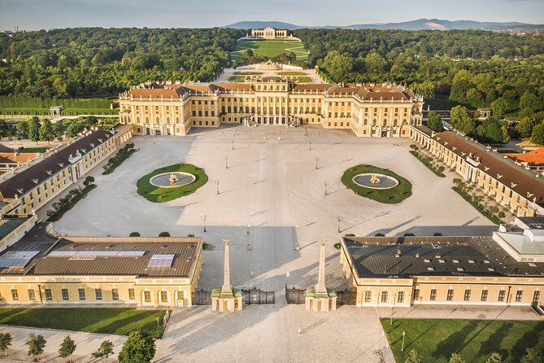
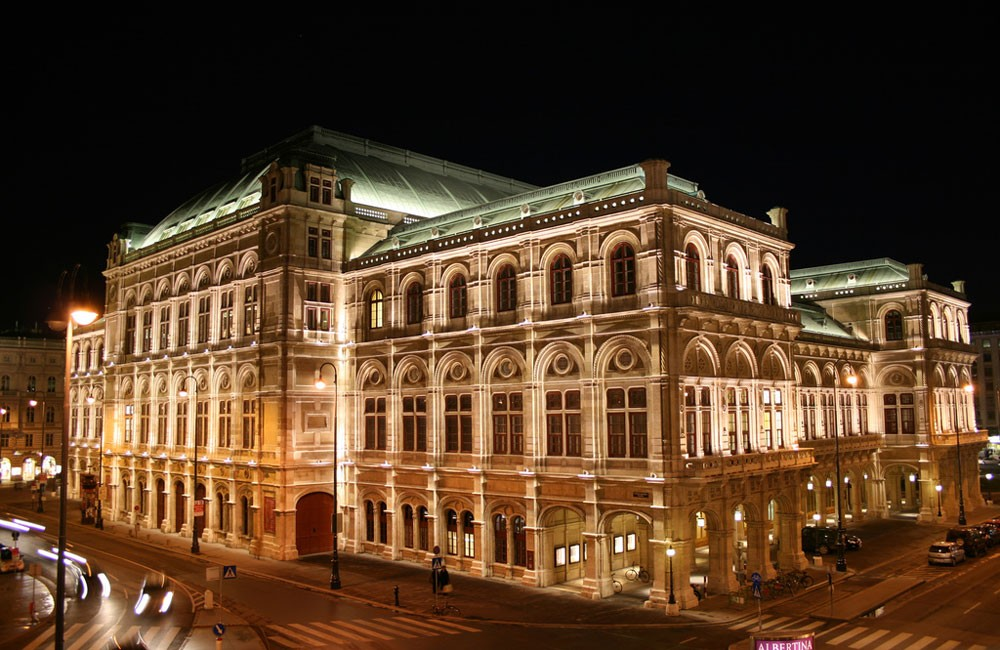

Top Sights in Vienna
- Schönbrunn Palace 
- St. Stephen's Cathedral
- Belvedere Palace
- Hofburg Imperial Palace
- Vienna State Opera 
.JPG)


Vienna, the capital of Austria, is a city steeped in history and culture, renowned for its imperial heritage, stunning architecture, and vibrant arts scene. Located along the banks of the Danube River, Vienna has long been a center of politics, philosophy, and the arts, boasting a legacy as the former capital of the Habsburg Empire. The city's historic center, a UNESCO World Heritage site, is filled with grand palaces, baroque buildings, and charming cobblestone streets. Landmarks such as the Schönbrunn Palace, St. Stephen’s Cathedral, and the Hofburg Imperial Palace offer a glimpse into its regal past. Vienna is also synonymous with classical music, once home to legendary composers like Mozart, Beethoven, and Strauss. The city continues to celebrate its musical heritage with world-class opera houses, concert halls, and festivals. Beyond its history, Vienna is known for its café culture, vibrant green spaces like the Prater Park, and its innovative culinary scene, including traditional Viennese coffee and the famous Sachertorte. Modern Vienna effortlessly blends its historical charm with contemporary life, offering residents and visitors a unique atmosphere filled with art, music, and a rich cultural experience.
Vienna’s history spans over two millennia, evolving from a Roman military outpost to one of Europe's most influential cities. Founded around 15 BC as the Roman settlement Vindobona, Vienna’s strategic location on the Danube River made it an important frontier post against Germanic tribes. After the fall of the Roman Empire, the city grew in prominence under various ruling dynasties. By the 13th century, Vienna had become the center of the Babenberg and later the Habsburg dynasties, the latter of which transformed the city into the heart of the Austro-Hungarian Empire. During this period, Vienna emerged as a political, cultural, and economic powerhouse. The Habsburgs commissioned grand palaces, churches, and cultural institutions, laying the foundations of Vienna's imperial architecture. The 17th and 18th centuries saw the city endure and triumph over external threats, notably the Ottoman sieges of 1529 and 1683, the latter marking a decisive moment in European history. The city blossomed further during the Baroque era, with art, music, and intellectual life flourishing. Vienna became a beacon of classical music and the arts, with composers like Mozart, Haydn, and Beethoven calling the city home. In the 19th century, Vienna continued to thrive as the capital of the Austrian Empire and later the Austro-Hungarian Empire, becoming a hub for cultural and scientific innovation, as well as political movements that shaped European history. The early 20th century, however, brought turmoil. After the collapse of the Austro-Hungarian Empire at the end of World War I, Vienna found itself at the center of a smaller, landlocked Austria. The city was significantly impacted by the rise of fascism, and during World War II, Vienna suffered from bombings and Nazi occupation. Post-war reconstruction was difficult, but by the late 20th century, Vienna regained its place as a leading European capital. Today, Vienna stands as a city of resilience, bridging its imperial past with a modern, vibrant future, continuing to be a center for diplomacy, culture, and the arts.
Viennese culture is a unique blend of imperial grandeur, artistic innovation, and timeless traditions. As the capital of Austria and the former center of the vast Habsburg Empire, Vienna has long been a crossroads of European culture, fostering a rich heritage that continues to influence its modern identity. At the heart of Viennese culture is its profound connection to music. Known as the "City of Music," Vienna has been home to some of the world’s most celebrated composers, including Mozart, Beethoven, Schubert, and Johann Strauss. The city's grand concert halls, like the Vienna State Opera and the Musikverein, host world-class performances, while the Vienna Philharmonic and annual New Year’s Concert draw global attention. Classical music is deeply ingrained in everyday life, but Vienna also embraces contemporary genres, making it a dynamic cultural hub for musicians. Vienna’s café culture is another iconic aspect of life in the city. The traditional Viennese coffeehouse, recognized by UNESCO as an "intangible cultural heritage," has long been a space for intellectual exchange, leisure, and socializing. Famous figures like Sigmund Freud, Gustav Klimt, and Stefan Zweig frequented these cafes, which remain popular meeting spots for locals and tourists alike. Coffeehouses serve not only as places to enjoy Viennese coffee and pastries like the Sachertorte, but also as cultural institutions where literature, art, and ideas flourish. Visual arts also play a significant role in Viennese culture. The city was a key center for the Secessionist movement in the late 19th and early 20th centuries, with artists like Gustav Klimt and Egon Schiele shaping modern European art. Vienna's museums, such as the Belvedere, Albertina, and Kunsthistorisches Museum, house priceless collections ranging from classical to contemporary works, making the city a haven for art lovers. Vienna's architectural heritage is equally impressive, with baroque palaces, Gothic cathedrals, and Jugendstil (Art Nouveau) buildings reflecting the city’s opulent past. Walking through Vienna’s streets, one can witness the layers of history in the grand structures, such as the Schönbrunn Palace, St. Stephen’s Cathedral, and the Secession Building. Tradition and modernity coexist harmoniously in Vienna’s cultural landscape. Festivals such as the Vienna Film Festival, the Life Ball, and various music and art events celebrate both the past and the present, offering a glimpse into the city's creative evolution. Viennese culture also values the outdoors, with numerous parks, gardens, and the famous Prater offering spaces for relaxation and recreation. From its classical music and art movements to its coffeehouse traditions and elegant architecture, Viennese culture reflects a deep sense of history while continuing to inspire new generations of artists, thinkers, and visitors.